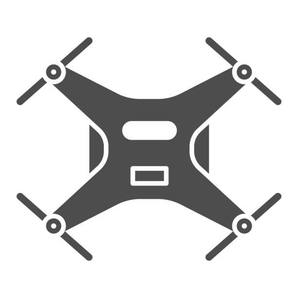
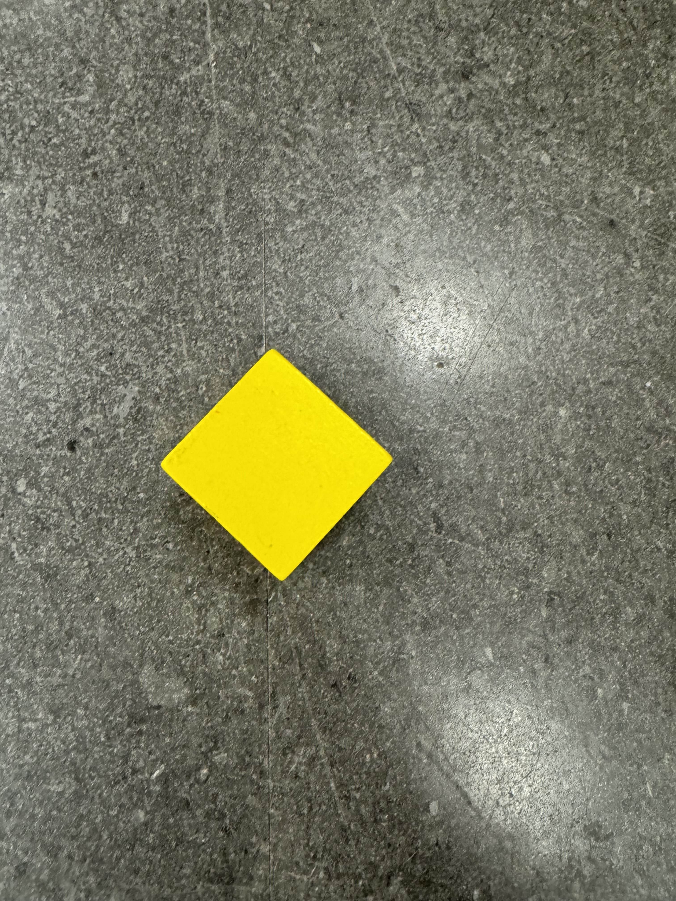
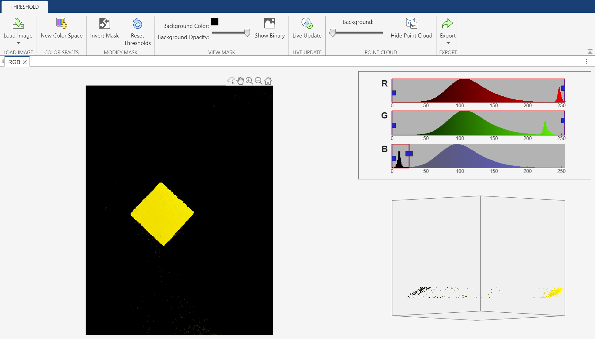
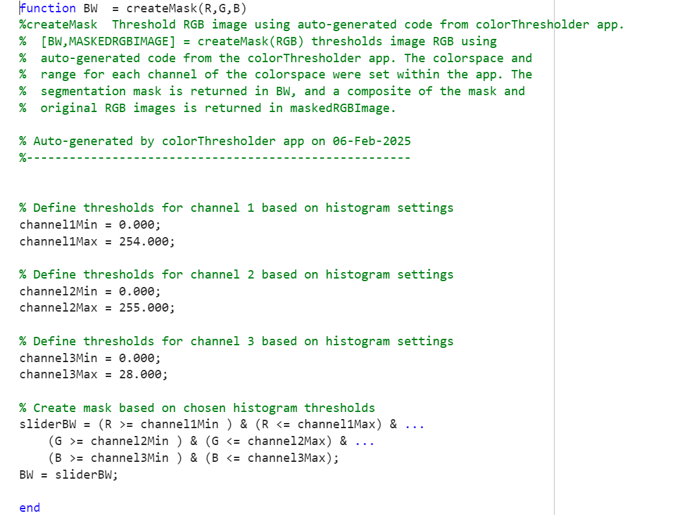
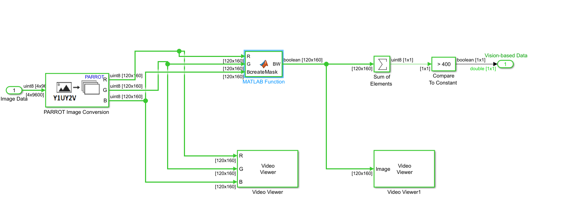
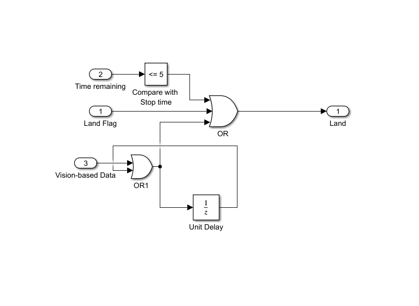

Following Land Station with Parrot Mambo

Description
The goal of this project is to develop a drone that follows a line following robot by detecting the landing station on top of the car.
Begin by building the line follower robot kit. Build a landing platform using cardboard or styrofoam with dimensions of 11x11 inches. Cover the platform with RGB-colored paper or tape.
Program the Parrot Mambo drone to track the landing station mounted on the moving line follower robot.
Modify the programming of the drone to initiate a controlled descent towards the landing station on the line follower robot while it is in motion. The descent should only be triggered when the drone detects the RGB-colored platform beneath it.
Equipment
These were the special equipments that I used for the projects.


Station Landing Demonstration
The video below was my project result, demonstrating the car following the line with the landing station on top of it while the drone tracking the tration to descent on it.
Line Following Demonstration
The video below was my project result, demonstrating the drone following the line.
Work Summary
In this project, I used Matlab and Simulink for computer vision and motor control.
The work was divided into 3 main parts, building the line following robot with the landing station on top, color detection program, and planning execution for the drone flight.
If the line following robot was not available, a color line following program for the drone was also possible.
Image Processing
To make the simulink model for this lab, I used Code Generation Template For Image Processing and Control from the Simulink Support Package for Parrot Minidrones.
In the Image Processing System, I changed Parrot Image Conversion output from YUV to RGB. Then I took a photo of the object to be detected like below.

After that, I used the Color Thresholder app in Matlab to export a matlab code that would just find the block color. I repeated the steps for other colors.

I edited the color masking Matlab code if needed.

I created a Simulink model that would read the block color and spin the motor when a certain number of color pixel was detected.

Landing
I made a Simulink model for landing like below.

Download Landing Station Following Code Download Line Following Code View Full Report (PDF)